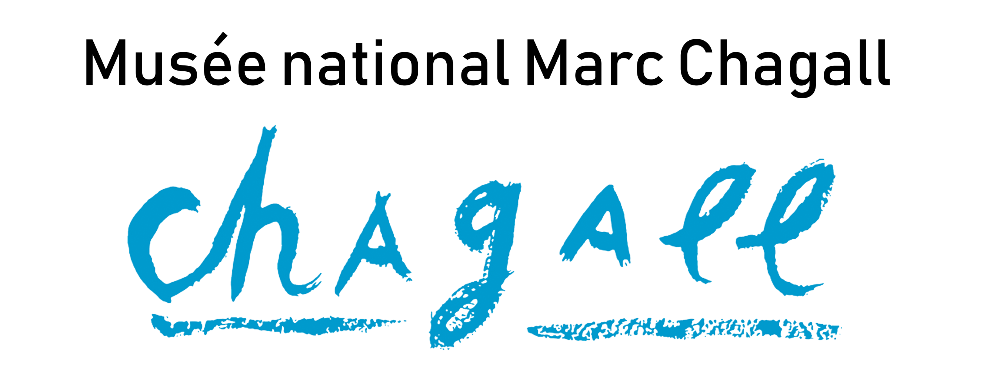

Éloge
Le Cantique des Cantiques, Marc Chagall
Marc Chagall commence à travailler sur le Message Biblique au début des années 1950. Au sein de ce chant d’amour nous trouvons Le Cantique des Cantiques. Celui-ci se compose de cinq toiles évoquant le célèbre poème de la Bible. Valentina Brodsky et Bella Rosenfeld -ses muses- sont au cœur des œuvres de Marc Chagall.
Dans le cadre de la 2ème édition de Boucan, se déroulant au 109 à Nice, je vous invite à découvrir une autre manière de penser, de percevoir et de sentir Le cantique des Cantiques.
Performance, poésie, photographie et immersion olfactive.
Immersion olfactive
Arôme naturel : Bergamote, Tubéreuse, Encens
Arôme synthétique : Hexenol, Coumarine
